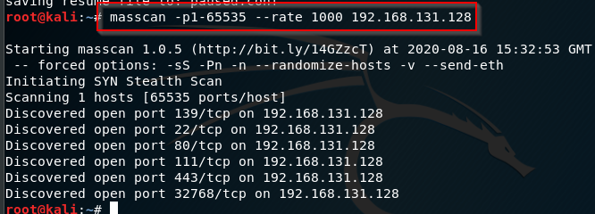

Mass scan was actually built to scan the entire internet really fast. It is a really fast port scanner.
This is an Internet-scale port scanner. It can scan the entire Internet in under 6 minutes, transmitting 10 million packets per second, from a single machine.
we do not reccommend scan entire internet with masscan because, your door is knocked pretty quick.
Sometimes nmap is faster than masscan sometimes vice versa.
https://github.com/robertdavidgraham/masscan

--rate is a speed factor.
we can firstly find the open ports thetn we can scan as with -A with nmap


like that. This is for speed purpose, if you have a concern which related to time you could want to use this